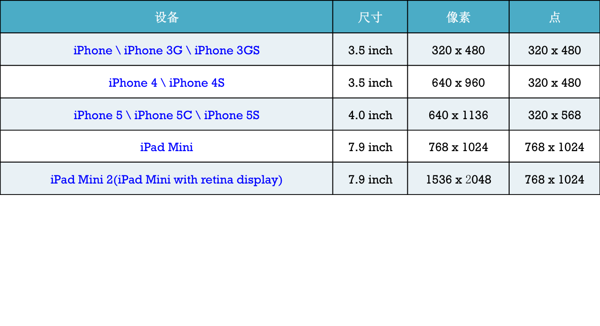

Autolayout的历史
屏幕适配的发展历史
- iPhone3GS\iPhone4
- 没有屏幕适配可言
- 全部用frame、bounds、center进行布局
- 很多这样的现象：坐标值、宽度高度值全部写死
1
2
| UIButton *btn1 = [[UIButton alloc] init];
btn1.frame = CGRectMake(0, 0, 320 - b, 480 - c);
|
iPad出现、iPhone横屏
- 出现Autoresizing技术
- 让横竖屏适配相对简单
- 让子控件可以跟随父控件的行为自动发生相应的变化
- 前提是：关闭Autolayout功能
- 局限性
- 只能解决子控件跟父控件的相对关系问题
- 不能解决兄弟控件的相对关系问题
iOS 6.0（Xcode4）开始
- 出现了Autolayout技术
- 从Xcode5.0(iOS 7.0)开始，开始流行Autolayout
iOS设备分辨率

使用代码实现Autolayout的方法1- 苹果原生方法
1
2
3
4
5
6
7
8
9
10
11
12
13
14
| +(id)constraintWithItem:(id)view1
attribute:(NSLayoutAttribute)attr1
relatedBy:(NSLayoutRelation)relation
toItem:(id)view2
attribute:(NSLayoutAttribute)attr2
multiplier:(CGFloat)multiplier
constant:(CGFloat)c;
* view1 ：要约束的控件
* attr1 ：约束的类型（做怎样的约束）
* relation ：与参照控件之间的关系
* view2 ：参照的控件
* attr2 ：约束的类型（做怎样的约束）
* multiplier ：乘数
* c ：常量
|
1
2
| - (void)addConstraint:(NSLayoutConstraint *)constraint;
- (void)addConstraints:(NSArray *)constraints;
|
- 注意
- 一定要在拥有父控件之后再添加约束
- 关闭Autoresizing功能
1
| view.translatesAutoresizingMaskIntoConstraints = NO;
|
使用代码实现Autolayout的方法2 - VFL
1
2
3
4
5
6
7
8
| + (NSArray *)constraintsWithVisualFormat:(NSString *)format
options:(NSLayoutFormatOptions)opts
metrics:(NSDictionary *)metrics
views:(NSDictionary *)views;
* format ：VFL语句
* opts ：约束类型
* metrics ：VFL语句中用到的具体数值
* views ：VFL语句中用到的控件
|
- 使用下面的宏来自动生成views和metrics参数
1
| NSDictionaryOfVariableBindings(...)
|
使用代码实现Autolayout的方法3 - Masonry
- 使用步骤
- 添加Masonry文件夹的所有源代码到项目中
- 添加2个宏、导入主头文件
1
2
3
4
5
6
| // 只要添加了这个宏，就不用带mas_前缀
#define MAS_SHORTHAND
// 只要添加了这个宏，equalTo就等价于mas_equalTo
#define MAS_SHORTHAND_GLOBALS
// 这个头文件一定要放在上面两个宏的后面
#import "Masonry.h"
|
1
2
3
4
5
6
7
8
9
10
11
12
13
14
| // 这个方法只会添加新的约束
[view makeConstraints:^(MASConstraintMaker *make) {
}];
// 这个方法会将以前的所有约束删掉，添加新的约束
[view remakeConstraints:^(MASConstraintMaker *make) {
}];
// 这个方法将会覆盖以前的某些特定的约束
[view updateConstraints:^(MASConstraintMaker *make) {
}];
|
1
2
3
4
| 1.尺寸：width\height\size
2.边界：left\leading\right\trailing\top\bottom
3.中心点：center\centerX\centerY
4.边界：edges
|